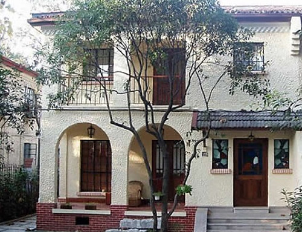

|

Shikumen, a name meaning “stone gate” in reference to the stone archways that wrap each alley and residential doorway and Lilong ("Li" means neighborhood, "Long" means lanes) is a typology characterized by a city block size development consisting of a dense clustering of 2-3 story attached residences connected by internal pedestrians alleyways. The perimeter of the block is usually converted for small-scale commercial uses. The developments are efficient and rationally ordered, making good use of scarce land, while still maintaining a sense of community and privacy. |